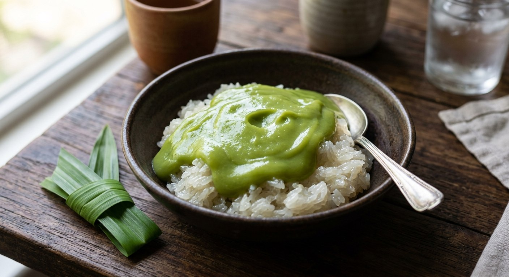

Coconut-mooned sticky rice under warm palm-sugar pandan custard — the stall breakfast that sells out by eight.

ข้าวเหนียวสังขยา is two classics stacked: ข้าวเหนียวมูน — sticky rice "mooned" with sweet coconut cream — under a spoonful of สังขยา, the palm-sugar pandan custard. Kapook's introduction to the recipe is the review every Thai knows: the stall by her house sells out every morning before she gets there, so she learned to make it herself. It's a breakfast in Thailand the way porridge is a breakfast here — except it's dessert.
The custard is made entirely by hand: duck eggs and palm sugar kneaded together with pandan leaves until the sugar dissolves — the leaf is the tool and the perfume — then coconut milk, one strain through muslin, and a long high-heat steam with the lid vented, about 45 minutes. The same technique that fills the pumpkin in sangkaya fak thong.
The rice half is its own discipline. The grains soak in alum water — the sources agree on the alum, only the timing differs — so they steam clear and glossy instead of chalky. Pim's detail-heavy method steams in a conical basket and flips the rice at ten minutes so it cooks evenly, then kneads fresh-pressed coconut cream with pandan, sugar and salt and folds it through the hot rice. The rest — ten minutes for Kapook, an hour for Aroifin — lets every grain drink the cream. That's the moon.
| Thai | English | Amount |
|---|---|---|
| สังขยา (the custard) | ||
| ไข่เป็ด | Duck eggs | 3 |
| น้ำตาลปึก | Palm sugar | 4 blocks |
| กะทิ | Coconut milk | ½ can |
| ใบเตย | Pandan leaves | 3–4 |
| ข้าวเหนียวมูน (the rice) | ||
| ข้าวเหนียวเขี้ยวงู | Sticky rice | 500 g |
| สารส้ม | Alum | 1 lump |
| หัวกะทิ | Coconut cream | 300 g |
| น้ำตาลทราย | White sugar | 250 g |
| เกลือป่น | Salt | 10 g |
| ใบเตย | Pandan leaves | 3–4 |
Aroifin's custard ratio: 350 g palm sugar (or 300 g sugar), ½ tsp salt, 3 pandan leaves, with the eggs and coconut in the same hand-squeezed method. Boxed-coconut shortcut (Aroifin): 300 ml boxed coconut, 120 g sugar, 2 tsp salt for 500 g rice — heat the cream gently, never boil.
The soak. Alum water for 5 minutes (Kapook), 10 minutes (Aroifin's full recipe), or a 3-wash alum rub with a one-hour soak (Aroifin's boxed-coconut version). Everyone uses alum — it's what makes the grains steam clear — only the ritual differs.
Fresh or boxed coconut. Pim presses her own head cream from a kilogram of grated coconut and says the difference is visible: fresh cream gives glossy, separate grains. Aroifin's shortcut version uses boxed coconut and heats it gently so the cream won't split. Both work; fresh is the gold standard.
The rest. Kapook rests the mooned rice 10–15 minutes; Aroifin lids it for a full hour. The longer rest lets more cream soak in — the rice gets sweeter and stickier.
Custard sugar. Palm sugar blocks (Kapook), measured palm sugar with a white-sugar alternative (Aroifin). Palm is the flavour; white makes a paler, lighter custard.
Boil or warm the cream. Kapook boils the moon liquid; Aroifin's shortcut version heats it gently on low — hot, never boiling — so the coconut fat doesn't separate. Same goal, different heat discipline.
This recipe is translated from the following Thai-language sources. Where they disagree, we've said so.
1. Kapook — "6 วิธีทำสังขยา" (the custard + rice pairing used here, via Pantip's คุณโอน่าจอมซ่าส์) — cooking.kapook.com
2. Pim's Kitchen (พิม) — "ข้าวเหนียวมูน 3 หน้า" (the fresh-pressed coconut method, 10-minute flip) — pim.in.th
3. Aroifin — "วิธีทำ ข้าวเหนียวสังขยา เนื้อสังขยาเนียนนุ่ม" (the measured custard ratio) — aroifin.com
4. Aroifin — "วิธีทำ ข้าวเหนียวมูนกะทิกล่อง" (the boxed-coconut shortcut) — aroifin.com